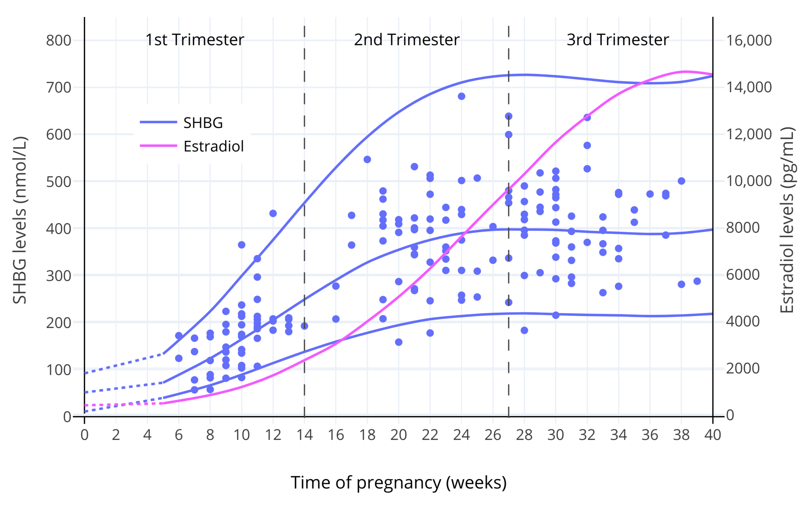
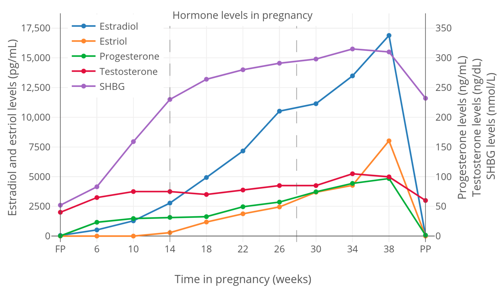
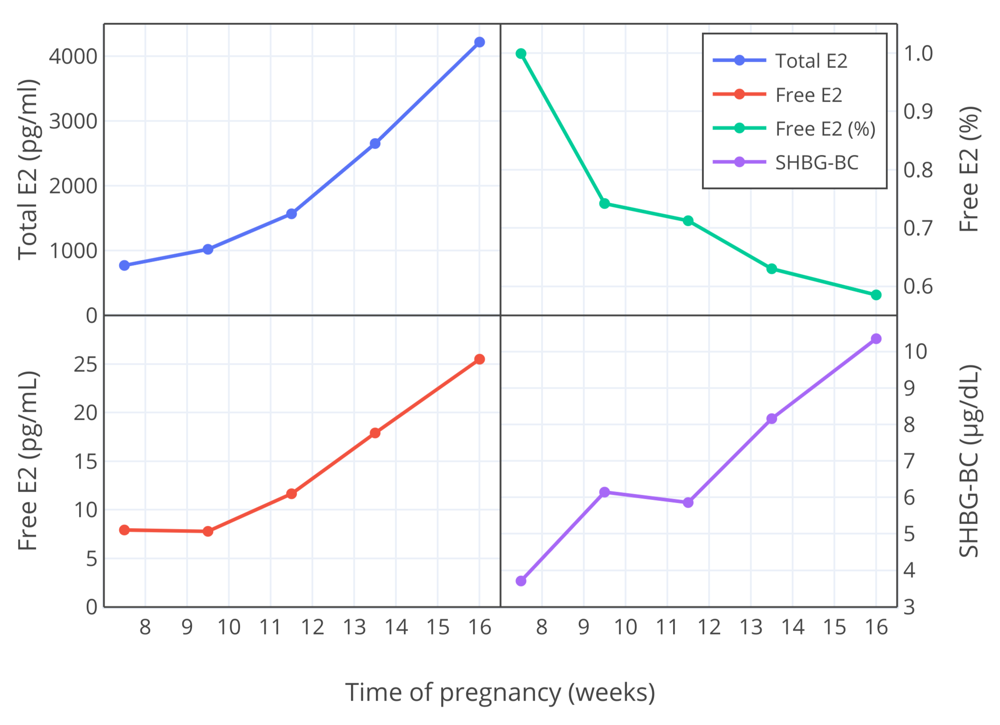
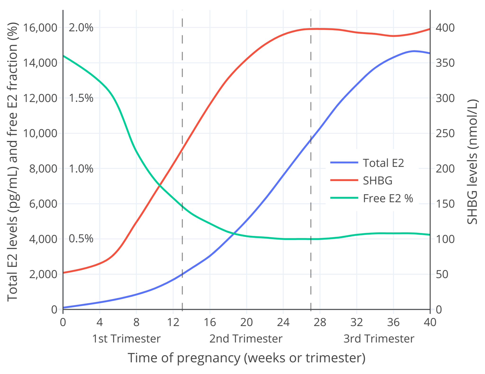

The Interactions of Sex Hormones with Sex Hormone-Binding Globulin and Relevance for Transfeminine Hormone Therapy
By Aly | First published July 10, 2020 | Last modified March 25, 2023
Abstract / TL;DR
Sex hormones such as testosterone and estradiol bind to blood proteins like albumin and SHBG. This limits their biological activity by reducing their free fractions. Androgens decrease SHBG production while estrogens increase SHBG production. Hence, testosterone and estradiol can influence their own free fractions. Due to robust inactivation in the liver, testosterone and estradiol have relatively small influences on SHBG levels under normal physiological circumstances. At very high levels however, they can considerably influence SHBG levels. During pregnancy, when there are massive increases in estradiol levels (e.g., 100-fold), a maximal 5- to 10-fold elevation in SHBG levels occurs. Although large increases in SHBG levels can strongly limit the biological activity of testosterone, the situation with estradiol is different. In late pregnancy, the percentage of estradiol that is free appears to be decreased only to around 60% of that of non-pregnancy. Earlier in pregnancy, when estradiol levels are lower, the free fractions of estradiol are reduced to a lesser extent. At typical therapeutic levels of estradiol in transfeminine hormone therapy (<200 pg/mL), the limiting influence of SHBG on free estradiol is minimal. Oral estradiol has a greater influence on SHBG production than non-oral estradiol and may be a different case however. In any case, consequent lesser activity of oral estradiol is only theoretical, and available clinical studies so far haven’t reported important therapeutic differences relative to non-oral estradiol. Although SHBG may reduce free estradiol fractions in some contexts, only relatively low estradiol levels (<50 pg/mL) appear to be needed for maximal feminization and breast development in cisgender females and transfeminine people. In conclusion, the influence of SHBG on the effectiveness of estradiol isn’t something that should be a major source of concern in transfeminine hormone therapy.
Binding of Sex Hormones to Blood Proteins
Sex hormones bind to proteins in the blood called plasma proteins. This is a phenomenon known as plasma protein binding. In the case of androgens and estrogens, the plasma proteins they bind to are mainly albumin and sex hormone-binding globulin (SHBG). Plasma protein binding serves to prevent sex hormones from interacting with their target cells and hence from binding to and activating their receptors (Hammond, 2016). This is because plasma proteins are too large and lipid-insoluble to cross the lipid-rich cell membrane. As a result, they’re unable to diffuse through capillaries to exit the circulation and enter into tissues or to be taken up into cells. When the sex hormone is bound to plasma protein, it can’t reach target cells either. Hence, plasma protein binding limits the biological activity of sex hormones (Hammond, 2016). Binding to plasma proteins also serves to extend the biological half-lives of sex hormones. This is because protein-bound sex hormone is likewise unavailable for metabolism and elimination, processes that depend on cellular uptake.
There is only a single sex hormone binding site per molecule of SHBG (Moore & Bulbrook, 1988), whereas albumin has six binding sites for different substrates (Pardridge, 1988). Androgens and estradiol have high affinity for SHBG (nM) and low affinity for albumin (μM) (Moore & Bulbrook, 1988; Hammond, 2016). However, albumin levels are several orders of magnitude higher than SHBG levels (μM vs. nM), so this serves to balance out the fractions of sex hormone bound to each protein (Hammond, 2016). Androgens have higher affinities for SHBG than do estradiol or other estrogens. Estradiol has only about 10 to 20% of the affinity of dihydrotestosterone (DHT) and 33 to 50% of the affinity of testosterone for SHBG (Anderson, 1974; Ojasoo & Raynaud, 1978; Pugeat, Dunn, Nisula, 1981). As such, testosterone and DHT bind more strongly to SHBG than does estradiol.
The vast majority of sex hormone content in the blood is bound to plasma proteins; at any given time more than 97% of the testosterone, estradiol, and progesterone in the blood is plasma protein-bound (Strauss & FitzGerald, 2019). The fraction of sex hormone that isn’t bound to plasma proteins is known as the free or unbound fraction. This is the fraction that is available for diffusion into cells and hence is considered to be biologically active (Hammond, 2016). Total levels refer to both free/unbound and bound hormone. Bioavailable levels include both albumin-bound and free hormone levels. Due to their relatively weak affinity for albumin, sex hormones bound to albumin may to some extent be biologically active—hence the “bioavailable” descriptor (Nguyen et al., 2008). However, more research is needed to fully elucidate the biological activity of albumin-bound sex hormone fractions.
The relative calculated free and bound percentages of estradiol, testosterone, and DHT to albumin, SHBG, and another plasma protein known as corticosteroid-binding globulin (CBG) (only binds small fractions of the androgens and has no binding to estradiol) are shown in the table below.
Table 1: Calculated plasma protein binding of sex hormones (Dunn, Nisula, & Rodbard, 1981):
| Hormone | Group | Albumin (%) | SHBG (%) | CBG (%) | Free (%) |
|---|---|---|---|---|---|
| Estradiol | Women (follicular) | 60.8 | 37.3 | <0.1 | 1.81 |
| Women (luteal) | 61.1 | 37.0 | <0.1 | 1.82 | |
| Women (pregnant) | 11.7 | 87.8 | <0.1 | 0.49 | |
| Men | 78.0 | 19.6 | <0.1 | 2.32 | |
| Testosterone | Women (follicular) | 30.4 | 66.0 | 2.26 | 1.36 |
| Women (luteal) | 30.7 | 65.7 | 2.20 | 1.37 | |
| Women (pregnant) | 3.60 | 95.4 | 0.82 | 0.23 | |
| Men | 49.9 | 44.3 | 3.56 | 2.23 | |
| DHT | Women (follicular) | 21.0 | 78.4 | 0.12 | 0.47 |
| Women (luteal) | 21.3 | 78.1 | 0.12 | 0.48 | |
| Women (pregnant) | 2.15 | 97.8 | 0.04 | 0.07 | |
| Men | 39.2 | 59.7 | 0.22 | 0.88 |
Free sex hormone levels and percentages are often calculated from levels of total sex hormone, albumin, SHBG, and CBG with validated mathematical models constructed from data of published studies. This is because free sex hormone levels are usually very low (pM range) and are difficult to measure with routine blood testing methods. While generally in the vicinity of the true values, calculated results may not always be fully accurate (Rosner, 2015; Goldman et al., 2017; Handelsman, 2017; Keevil & Adaway, 2019). As such, measured levels, when feasible, are preferable.
Effects of Sex Hormones on SHBG Production
Plasma proteins like albumin and SHBG are synthesized in the liver and are then secreted into the blood. In addition to binding to SHBG, sex hormones modulate the liver production of SHBG and hence influence their own plasma protein binding. Androgens decrease SHBG production while estrogens increase SHBG production (Anderson, 1974; Moore & Bulbrook, 1988). Administration of the anabolic steroid stanozolol (a synthetic DHT derivative) for just a few days suppresses SHBG levels by 63% (Krause et al., 2004). Continuous therapy with extreme doses of testosterone and other anabolic steroids decrease SHBG levels by 90% (Ruokonen et al., 1985; Moore & Bulbrook, 1988). Similarly, weakly androgenic progestins like medroxyprogesterone acetate (MPA), norethisterone (NET), and levonorgestrel (LNG) decrease SHBG production (Kuhl, 2005), and very high doses of medroxyprogesterone acetate and megestrol acetate (MGA) have been reported to decrease SHBG levels by up to around 50 to 90% (Heubner et al., 1987; Lundgren et al., 1990; Lundgren & Lønning, 1990). Conversely, combined birth control pills containing the synthetic estrogen ethinylestradiol (EE) (and a minimally androgenic or an antiandrogenic progestin) increase SHBG levels by about 4-fold (Odlind et al., 2002). High doses of oral synthetic estrogens, like EE and diethylstilbestrol (DES), increase SHBG levels by up to 5- to 10-fold (von Schoultz et al., 1989).
Testosterone, DHT, and estradiol are strongly inactivated by the liver and have relatively weak effects in this part of the body under normal circumstances. As a result, they have much less relative impact on SHBG production than do synthetic hormonal agents. Accordingly, SHBG levels change only slightly over the course of the menstrual cycle in women despite substantial fluctuations in estradiol levels (Freymann et al., 1977b; Plymate et al., 1985; Schijf et al., 1993; Braunstein et al., 2011; Rothman et al., 2011; Fanelli et al., 2013; Rezaii et al., 2017). In one study, SHBG levels increased by about 6 to 13% (+2.9–5.3 nmol/L) going from the follicular phase to the luteal phase of the cycle (Braunstein et al., 2011). There is additionally only a small decrease in SHBG levels attributable to the sharp decline in estradiol with menopause (Burger et al., 2000; Guthrie et al., 2004). Nonetheless, estradiol therapy can more considerably influence the production of SHBG and other liver proteins as well under specific conditions (Kuhl, 1998). This is due to 1) use of oral estradiol, which because of the first pass through the liver has a greater impact on estrogen-sensitive liver synthesis than non-oral routes (Kuhl, 2005); and 2) use of high estradiol doses, for instance typical injectable doses. The table below shows SHBG increases from various studies with different estrogen routes, doses, and types.
Table 2: Relative increases in SHBG levels with some different estrogenic exposures:
| Estrogen | Typical E2 levels a | SHBG increase | Source |
|---|---|---|---|
| Oral E2 1 mg/day | ~25 pg/mL | 1.6× | Kuhl (1998) |
| Oral E2 2 mg/day | ~50 pg/mL | 2.2× | Kuhl (1998) |
| Oral E2 4 mg/day | ~100 pg/mL | 1.9–3.2× | Fåhraeus & Larsson-Cohn (1982); Gibney et al. (2005); Ropponen et al. (2005) |
| Oral EV 6 mg/dayb | ~112.5 pg/mL | 2.5–3.0× | Dittrich et al. (2005); Mueller et al. (2005); Mueller et al. (2006) |
| E2 patch 50 μg/day | ~50 pg/mL | 1.1× | Kuhl (2005) |
| E2 patch 100 μg/day | ~100 pg/mL | 1.2× | Shifren et al. (2008) |
| E2 patches 200 μg/day | ~200 pg/mL | ~1.5× | Smith et al. (2020) |
| E2 patches 300 μg/day | ~300 pg/mL | ~1.7× | Smith et al. (2020) |
| E2 patches 600 μg/day | ~600 pg/mL | 2.3× | Bland et al. (2005) |
| EU 100 mg/month | ~550 pg/mL | 2.0× | Derra (1981) |
| PEP 320 mg/month | ~700 pg/mL | 1.7× | Stege et al. (1988) |
| EV 10 mg/10 days | Variable (high) | 3.2× | Mueller et al. (2011) [Table] |
| EV 10 mg/14 days | Variable (high) | ~3.2× | Kronawitter et al. (2009) [Table] |
| Oral EE 10 μg/day | – | 3.0× | Kuhl (1998) |
| Oral EE 50 μg/day | – | 4.0× | Kuhl (1997) |
| High-dose synthetic E | – | 5–10× | von Schoultz et al. (1989) |
a Estimated typical estradiol levels from various sources (e.g., Aly, 2020; Wiki). b Due to differences in molecular weight, EV has about 75% of the amount of estradiol as regular estradiol. Hence, 6 mg/day EV is approximately equivalent to 4.5 mg/day E2.
The influence of estradiol on SHBG levels is most relevant to pregnancy, when estradiol levels increase to far higher levels than usual. In late pregnancy, estradiol levels are generally around 15,000 to 25,000 pg/mL on average (Graphs; Troisi et al., 2003; Adamcová et al., 2018). These estradiol levels are on the order of 100-fold higher than normal menstrual cycle levels. In parallel with the massive increases in estradiol levels, SHBG levels increase by about 5- to 10-fold by late pregnancy (Anderson, 1974; Hammond, 2017). The dose–response curve of estrogens on SHBG production shows saturation, with most of the increase in SHBG levels happening at lower estradiol levels as well as limits to how much SHBG levels can be increased (Mean, Pellaton, & Magrini, 1977; O’Leary et al., 1991; Kerlan et al., 1994; Kuhl, 1999). The graphs below show SHBG levels throughout pregnancy.
|  |
|---|
| Figure 1: SHBG and total estradiol levels during pregnancy in women (O’Leary et al., 1991). The lines are the mean and/or 95th percentile levels while the points are individual measurements. |
|  |
|---|
| Figure 2: Total sex hormone and SHBG levels during pregnancy in women (Kerlan et al., 1994). |
Effects of SHBG Increase on Free Sex Hormone Levels
Changes in SHBG levels result in changes in SHBG-bound and free sex hormone levels. Aside from DHT, estradiol and testosterone are the hormones of the greatest interest in this regard.
SHBG Increase and Free Testosterone
EE-containing birth control pills, with their 4-fold increase in SHBG levels, substantially decrease the free percentage of testosterone (Graham et al., 2007; Zimmerman et al., 2014). In one study, an EE-containing birth control pill decreased the free testosterone fraction from 2.45% to 0.78% (a 3.2-fold decrease or to 32% of baseline) (Graham et al., 2007). Due to concomitant suppression of testosterone production and hence reduced total testosterone levels, free testosterone levels decreased from 0.89 pg/mL to 0.18 pg/mL (a 5-fold decrease, to 20% of baseline) (Graham et al., 2007). The influence of EE on SHBG levels contributes significantly to the antiandrogenic effects of EE-containing birth control pills, which are taken advantage of therapeutically to treat acne and hirsutism in women.
During pregnancy, testosterone levels increase to as much as 150 ng/dL (around 5-fold higher than non-pregnancy levels) (McClamrock, 2007). The increase in SHBG production during pregnancy serves an important function in that the higher SHBG levels neutralize the biological activity of the increased testosterone levels (Hammond, 2017). In one study, the free testosterone fraction was 6-fold lower in late pregnancy than in non-pregnant women (0.23% vs. 1.36%—or to 17% of non-pregnancy) (Dunn, Nisula, & Rodbard, 1981). Hence, despite substantial increases in total testosterone levels during pregnancy, free testosterone levels and by extension androgenic action in the body change minimally (Barini, Liberale, & Menini, 1993; Schuijt et al., 2019). A case report of marked hyperandrogenism due to severe SHBG deficiency in a pregnant woman evidences the role of SHBG in limiting the androgenic actions of testosterone during this time (Hogeveen et al., 2002; Hammond, 2017).
SHBG Increase and Free Estradiol
Endogenous and Non-Oral Estradiol
The research indicates that increases in SHBG levels and by extension decreases in the free estradiol fraction are minimal with physiological levels of estradiol (e.g., <200 pg/mL). This is the case whether the estradiol is endogenous or exogenous in origin—so long as it is taken non-orally. Such conclusions are based on both calculated and measured studies of free estradiol (e.g., Freymann et al., 1977b).
Increases in SHBG levels and decreases in the free estradiol fraction become more significant with supraphysiological levels of estradiol however, for instance during pregnancy and with very-high-dose estradiol therapy. Studies on changes in free estradiol with high doses of estradiol are few. This is especially true in the case of measured as opposed to calculated free estradiol. In any case, one can look at pregnancy to gain insight on the question of free estradiol with high estradiol levels. Moreover, due to the very high estradiol levels in pregnancy, free estradiol is more amenable to measurement during this time. Accordingly, multiple studies of measured free estradiol in pregnancy are available.
Although free estradiol percentages during pregnancy certainly decrease, the increases in estradiol are far from neutralized by SHBG. Hence, the situation with free estradiol in pregnancy is very different from that of testosterone. This is illustrated in the following excerpt (Rubinow et al., 2002):
Pregnancy is accompanied by a slow but sustained rise in the plasma levels of many steroid and peptide hormones and is followed by a precipitous drop in their levels over the first few days after delivery. By the third trimester of pregnancy, plasma progesterone levels average approximately 150 ng/ml and estradiol levels range from 10 to 15 ng/ml. These amounts represent a 10- and 50-fold increase, respectively, of maximum menstrual cycle levels (Tulchinsky et al., 1972). Although only a small fraction of these steroids are unbound, the amount of “free” (and thus biologically active) progesterone and estrogen also undergo similarly large increases during pregnancy (Heidrich et al., 1994).
In the study by Heidrich and colleagues cited in the excerpt, total estradiol levels at the time of delivery were 21,500 pg/mL and measured free estradiol levels were 232 pg/mL, with a resultant free estradiol fraction of 1.08% (Heidrich et al., 1994). For context, the free estradiol percentage in non-pregnant women ranges from 1.5 to 2.1% with RIA, while actual free estradiol levels are 0.30 to 4.1 pg/mL with RIA and 0.40 to 5.9 pg/mL with LC–MS/MS (Nakamoto, 2016). Hence, in this study free estradiol levels in late pregnancy were around 50-fold higher than maximal non-pregnancy levels.
Due to variable methodology, the findings of a single study may not be representative. As such, the table below provides measured free estradiol percentages in late pregnancy from several studies.
Table 3: Measured free estradiol percentages in late pregnancy (mean ± SD) (Perry et al., 1987):
| Study | Method | n | Free E2 (%) |
|---|---|---|---|
| Perry et al. (1987) | Centrifugal ultrafiltration | 25 | 1.27 ± 0.23 |
| Hammond et al. (1980) | Centrifugal ultrafiltration | 5 | 0.96 ± 0.12 |
| Heidrich et al. (1994) | Centrifugal ultrafiltration | 26 | 1.08 |
| Tulchinsky et al. (1973) | Equilibrium dialysis | 5 | 0.67 ± 0.18 |
| Freymann et al. (1977a) | Equilibrium dialysis | 17 | 1.15 |
| Anderson et al. (1985) | Steady-state gel filtration | 12 | 1.48 ± 0.55 |
As can be seen in the table, the free estradiol fraction in late pregnancy ranges from about 0.7 to 1.5%. Results for the free estradiol fraction from studies using calculated free estradiol levels in late pregnancy rather than measured levels are similar to measured findings, although sometimes a bit lower in comparison (e.g., 0.5%) (Dunn, Nisula, & Rodbard, 1981; Campino et al., 2001). The measured free estradiol percentage in late pregnancy can be cautiously compared to the fraction of 1.5 to 2.1% in non-pregnant women. Using middle values from these ranges, the free estradiol fraction in late pregnancy may be somewhere around 60% of that of non-pregnancy. This estimate is quite close to the actual findings of a study, which observed a decrease in the measured free estradiol percentage to 55% of that of non-pregnancy (Freymann et al., 1977a; Freymann et al., 1977b).
In contrast to estradiol, the free percentages of estrone and estriol are not different in late pregnancy when compared to non-pregnancy (Tulchinsky & Chopra, 1973; Steingold et al., 1987). This is attributable to the much lower affinities of estrone and estriol for SHBG relative to estradiol (Kuhl, 2005).
Studies have also assessed free estradiol fractions earlier in pregnancy, which might in theory differ from late pregnancy. The results of a study that measured free estradiol throughout pregnancy are shown in the table below (Freymann et al., 1977a; Freymann et al., 1977b).
Table 4: Total and free estradiol in pregnancy (mean ± SD) (Freymann et al., 1977a; Freymann et al., 1977b):
| Context | n | E2 (ng/mL) | Change | Free E2 (%) | Change | Free E2 (pg/mL) | Change |
|---|---|---|---|---|---|---|---|
| Non-pregnant | 35 | 0.16 ± 0.10 | 1.0× | 2.2 ± 0.4 | –0% | 3.5 ± 2.0 | 1.0× |
| Pregnancy | |||||||
| 6–20 weeks | 9 | 2.0 ± 1.1 | 13× | 1.6 ± 0.4 | –27% | 32 ± 21 | 9.1× |
| 12–20 weeks | 10 | 5.5 ± 2.2 | 34× | 1.3 ± 0.3 | –41% | 72 ± 39 | 21× |
| 20–30 weeks | 12 | 10.8 ± 4.6 | 68× | 1.2 ± 0.3 | –45% | 130 ± 74 | 37× |
| 30–38 weeks | 17 | 16.0 ± 7.0 | 100× | 1.2 ± 0.2 | –45% | 184 ± 103 | 53× |
In similar studies by another group of researchers, free estradiol fractions were measured in earlier pregnancy (weeks 7–16) and were found to be lower than those obtained by Freymann and colleagues (Bernstein et al., 1986; Depue et al., 1987; Bernstein et al., 1988). The free estradiol percentage was about 0.9 or 1.0% at 10 weeks and about 0.7% at 12 weeks (Bernstein et al., 1986; Depue et al., 1987; Bernstein et al., 1988). Hence, as with the results of Freymann and colleagues, the free estradiol fraction decreased as pregnancy progressed. The figure below provides a visualization of the findings.
|  |
|---|
| Figure 3: Changes in total and free estradiol levels (pg/mL), free estradiol fraction (%), and SHBG binding capacity (μg/dL) during weeks 7 to 16 of pregnancy in women (Bernstein et al., 1986). |
Free estradiol during pregnancy can also be calculated using total estradiol levels and SHBG levels. I roughly calculated the free estradiol fraction during pregnancy using the data from O’Leary et al. (1991) and a published calculator spreadsheet by Mazer (2009) (Aly, 2020). The results are shown below.
|  |
|---|
| Figure 4: Average measured total estradiol and SHBG levels (O’Leary et al., 1991) and calculated free estradiol percentage (Mazer, 2009) throughout pregnancy in women. Another version of this graph scaled to only the first trimester of pregnancy (when estradiol levels are typically ≤2,000 pg/mL) is also provided (Graph). |
{kind=link}
The free estradiol fractions in the figure are merely rough estimations and hence should be given conservative consideration. In any case, they are similar to the findings of the available studies on measured free estradiol in earlier pregnancy just discussed—for instance in magnitude (relative to Bernstein et al.) and pattern of change throughout pregnancy (relative to both Bernstein et al. and Freymann et al.). As such, these calculated values offer a plausible and interesting model.
To summarize, there are profound increases in total estradiol levels and proportionally lower but still substantial increases in SHBG levels during pregnancy. In accordance with the marked increase in SHBG levels, the free estradiol fraction progressively decreases over the course of pregnancy. Studies are conflicting on the exact degrees to which free estradiol percentages decrease. In any case, the possibilities for the free estradiol fraction by late pregnancy range from about 0.5 to 1.5%. These figures can be compared to non-pregnancy free estradiol percentages of 1.5 to 2.1%. This may correspond to a maximal decrease in the free estradiol fraction in late pregnancy to around 60% of non-pregnancy. At the greatest extreme, the decrease may be to around 25% of non-pregnancy. Conversely, in earlier pregnancy, when estradiol levels are lower, free estradiol percentages are higher.
Despite the decreases in the free estradiol fraction during pregnancy, there are profound increases in free estradiol levels that parallel the massive increases in total estradiol. As such, the increase in estradiol levels during pregnancy markedly exceeds the limiting influences of the simultaneously elevated SHBG levels. For this reason, pregnancy is a profoundly hyperestrogenic state.
SHBG doesn’t impact estradiol like it does testosterone during pregnancy because the proportional increases in estradiol levels relative to SHBG levels are far greater in comparison and because of the relatively lower affinity of estradiol for SHBG. In general, it’s not possible for SHBG to limit the activity of estradiol in the way that it can with testosterone due to the inherent requirement for substantially increased SHBG production of much more highly increased estradiol levels.
Oral Estradiol
Oral estradiol may differ from non-oral estradiol when it comes to the issue of free estradiol. This is because oral estradiol undergoes a first pass that results in greater estradiol levels in the liver relative to the circulation. As a result, oral estradiol has disproportionate liver effects and increases SHBG levels to a proportionally greater extent than non-oral estradiol. Hence, the greater SHBG increases with oral estradiol may result in lower free estradiol fractions than with non-oral estradiol.
While this is probable, it is more difficult to determine the precise magnitudes of the differences between oral and non-oral estradiol in terms of free estradiol. Some data are available however. Clinical studies of low-dose oral estradiol in menopausal cisgender women have reported the limiting influence of the SHBG increase on calculated free estradiol to be modest (Nilsson, Holst, & von Schoultz, 1984; Nachtigall et al., 2000). Likewise, oral estradiol appears to have similar effectiveness for menopausal symptoms when compared to non-oral estradiol (Wiki; 2nd paragraph). Studies of higher doses of oral estradiol that provide data on SHBG or free estradiol levels are rare. In any case, a few studies by one group found that 6 mg/day oral estradiol valerate (a dose equivalent to approximately 4.5 mg/day oral estradiol) increased SHBG levels by about 2.5- to 3.0-fold in transgender women (Dittrich et al., 2005; Mueller et al., 2005; Mueller et al., 2006). Using the numbers from one of the studies for total estradiol and SHBG levels, it can be roughly calculated (Mazer, 2009) that the free estradiol fraction may have decreased from around 2.1% to 1.2% (a 43% reduction). Analogously, a study using oral conjugated estrogens (CEEs; Premarin) at a dose that increased SHBG levels by 2.3-fold reported that the calculated free estradiol percentage was 40% lower relative to an equivalent dose of transdermal estradiol (in terms of total estradiol levels) (Shifren et al., 2007). These findings suggest a non-trivial reduction in the free estradiol fraction with typical doses of oral estradiol in transfeminine people. Consequently, it’s possible that oral estradiol could be to a certain degree less potent at the same total estradiol levels relative to non-oral estradiol.
It’s important to be clear that it’s also not a certainty however. Levels of estrone are much higher with oral estradiol than with non-oral estradiol (~5-fold) (Kuhl, 2005), and estrone, although far less potent than estradiol, has significant intrinsic estrogenic activity similarly to estradiol (Kuhl, 2005). The degree to which estrone might add to the estrogenic activity of estradiol, if at all, is uncertain. In any case, it’s within the realm of possibility that estrone could contribute significantly to the estrogenic activity of oral estradiol (Pande et al., 2019). This additional estrogenic exposure could potentially serve to offset the impact of the higher SHBG levels and reduced free estradiol fractions that occur with oral estradiol. Further research is needed to evaluate such a possibility however. As another consideration, the higher SHBG levels with oral estradiol can be expected to reduce the free testosterone fraction in addition to that of estradiol (and to an even greater extent in comparison). This is important as testosterone suppression is a key therapeutic effect of estradiol in transfeminine people and the main justified reason for use of higher estradiol levels. Due to possibilities like these and the fact that free levels of hormones only theoretically represent their biological activity, it shouldn’t necessarily be assumed that oral estradiol is less potent or efficacious than non-oral estradiol. Only further clinical studies comparing oral estradiol to non-oral estradiol will be able to clarify this question.
Relevance for Transfeminine Hormone Therapy
Some have concerns that SHBG may substantially limit the effectiveness of estradiol and thereby hinder feminization and/or breast development. Some have even claimed that high levels of estradiol may be less effective than lower levels as a result of SHBG increases at higher levels. Before even touching on SHBG however, such notions are likely to be misguided. This is because low estradiol levels (<50 pg/mL) are known to be fully effective in terms of feminization and breast development. This is evidenced by normal and induced puberty in cisgender girls (Aly, 2020), as well as by the excellent secondary sexual development of women with complete androgen insensitivity syndrome (CAIS) (Aly, 2020; Wiki). No evidence exists at this time to indicate that higher estradiol levels are necessary or beneficial in terms of feminization or breast development (Nolan & Cheung, 2020). Available studies in fact suggest no relationship between estradiol levels and breast development in transfeminine people at typical therapeutic levels of estradiol (e.g., 50–200 pg/mL) (de Blok et al., 2017; Meyer et al., 2020; de Blok et al., 2020). This is in accordance with the concept of the maximal effect of estradiol on feminization and breast development being established at lower estradiol levels. Hence, besides the use of higher estradiol levels for testosterone suppression in transfeminine people, concerns about incomplete feminizing efficacy of estradiol consequent to inadequate estrogenic exposure have little basis.
If SHBG is nonetheless explored however, the research indicates that the role of SHBG in restricting free estradiol, and hence presumably the biological activity of estradiol, is only so considerable. Within physiological non-pregnancy ranges for estradiol (e.g., <200 pg/mL), changes in SHBG levels and free estradiol fractions due to endogenous or non-oral estradiol are minimal. Very high estradiol levels have greater influence on SHBG production than normal physiological levels however. During pregnancy, with the massive increases in estradiol and resultant 5- to 10-fold maximal elevation in SHBG levels, the free estradiol percentage may be decreased to around 60% of that of non-pregnancy. But actual free estradiol levels are nonetheless profoundly increased in pregnancy. Moreover, increases in SHBG levels and decreases in free estradiol fraction earlier in pregnancy are lower than in late pregnancy. Even with among the highest estradiol levels that would normally be encountered with non-oral estradiol therapy, the decreases in the free estradiol fraction due to SHBG are likely to be modest. The impact of such a reduction could easily be negated by a slightly greater estradiol dose.
While the preceding is applicable to non-oral estradiol, oral estradiol has a greater influence on SHBG production in comparison and hence the higher SHBG levels with oral estradiol could result in more significant limitation of free estradiol than with non-oral estradiol. The notion that this reduction in free estradiol corresponds to a decrease in the activity or potency of oral estradiol is only a theoretical possibility however. Therapeutically, oral estradiol has shown itself to be very effective. The decreases in free estradiol percentage with low-dose oral estradiol seem to be small. In addition, while no direct comparisons exist this time, higher doses of oral estradiol seem to show similar testosterone suppression as non-oral estradiol (Wiki; Graphs). Besides testosterone suppression, available studies have found no differences between oral and non-oral estradiol in terms of outcomes like breast development or feminization (Sam, 2020). As such, the differences between oral and non-oral estradiol in terms SHBG levels and free estradiol fraction may be of little therapeutic importance.
Aside from decreasing free estradiol fractions, increased SHBG levels also decrease free testosterone fractions to an even greater extent. This is advantageous in the case of transfeminine people.
Taken together, lower free estradiol due to increased SHBG levels, whether with non-oral or oral estradiol, isn’t something that should be a major source of concern in transfeminine hormone therapy.
Supplementary Material
See here for supplementary material for this article, including a spreadsheet and other calculators that can be used to estimate free hormone levels (e.g., Mazer, 2009).
References
- Adamcová, K., Kolátorová, L., Škodová, T., Šimková, M., Pařízek, A., Stárka, L., & Dušková, M. (2018). Steroid hormone levels in the peripartum period – differences caused by fetal sex and delivery type. Physiological Research, 67(Suppl 3), S489–S497. [DOI:10.33549/physiolres.934019]
- Anderson, D. C. (1974). Sex-Hormone-Binding Globulin. Clinical Endocrinology, 3(1), 69–96. [DOI:10.1111/j.1365-2265.1974.tb03298.x]
- Anderson, P. J., Hancock, K. W., & Oakey, R. E. (1985). Non-protein-bound oestradiol and progesterone in human peripheral plasma before labour and delivery. Journal of Endocrinology, 104(1), 7–15. [DOI:10.1677/joe.0.1040007]
- Barini, A., Liberale, I., & Menini, E. (1993). Simultaneous Determination of Free Testosterone and Testosterone Bound to Non-Sex-Hormone-Binding Globulin by Equilibrium Dialysis. Clinical Chemistry, 39(6), 936–941. [DOI:10.1093/clinchem/39.6.936]
- Bernstein, L., Depue, R. H., Ross, R. K., Judd, H. L., Pike, M. C., & Henderson, B. E. (1986). Higher maternal levels of free estradiol in first compared to second pregnancy: early gestational differences. Journal of the National Cancer Institute, 76(6), 1035–1039. [DOI:10.1093/jnci/76.6.1035]
- Bernstein, L., Pike, M., Depue, R., Ross, R., Moore, J., & Henderson, B. (1988). Maternal hormone levels in early gestation of cryptorchid males: a case-control study. British Journal of Cancer, 58(3), 379–381. [DOI:10.1038/bjc.1988.223]
- Bland, L. B., Garzotto, M., DeLoughery, T. G., Ryan, C. W., Schuff, K. G., Wersinger, E. M., Lemmon, D., & Beer, T. M. (2005). Phase II study of transdermal estradiol in androgen-independent prostate carcinoma. Cancer, 103(4), 717–723. [DOI:10.1002/cncr.20857]
- Braunstein, G. D., Reitz, R. E., Buch, A., Schnell, D., & Caulfield, M. P. (2011). Testosterone Reference Ranges in Normally Cycling Healthy Premenopausal Women. The Journal of Sexual Medicine, 8(10), 2924–2934. [DOI:10.1111/j.1743-6109.2011.02380.x]
- Burger, H. G., Dudley, E. C., Cui, J., Dennerstein, L., & Hopper, J. L. (2000). A Prospective Longitudinal Study of Serum Testosterone, Dehydroepiandrosterone Sulfate, and Sex Hormone-Binding Globulin Levels through the Menopause Transition. The Journal of Clinical Endocrinology & Metabolism, 85(8), 2832–2838. [DOI:10.1210/jcem.85.8.6740]
- Campino, C., Torres, C., Rioseco, A., Poblete, A., Pugin, E., Valdés, V., Catalán, S., Belmar, C., & Serón-Ferré, M. (2001). Plasma prolactin/oestradiol ratio at 38 weeks gestation predicts the duration of lactational amenorrhoea. Human Reproduction, 16(12), 2540–2545. [DOI:10.1093/humrep/16.12.2540]
- de Blok, C. J., Klaver, M., Wiepjes, C. M., Nota, N. M., Heijboer, A. C., Fisher, A. D., Schreiner, T., T’Sjoen, G., & den Heijer, M. (2017). Breast Development in Transwomen After 1 Year of Cross-Sex Hormone Therapy: Results of a Prospective Multicenter Study. The Journal of Clinical Endocrinology & Metabolism, 103(2), 532–538. [DOI:10.1210/jc.2017-01927]
- de Blok, C. J., Dijkman, B. A., Wiepjes, C. M., Staphorsius, A. S., Timmermans, F. W., Smit, J. M., Dreijerink, K. M., & den Heijer, M. (2020). Sustained Breast Development and Breast Anthropometric Changes in 3 Years of Gender-Affirming Hormone Treatment. The Journal of Clinical Endocrinology & Metabolism, 106(2), e782–e790. [DOI:10.1210/clinem/dgaa841]
- Depue, R. H., Bernstein, L., Ross, R. K., Judd, H. L., & Henderson, B. E. (1987). Hyperemesis gravidarum in relation to estradiol levels, pregnancy outcome, and other maternal factors: A seroepidemiologic study. American Journal of Obstetrics and Gynecology, 156(5), 1137–1141. [DOI:10.1016/0002-9378(87)90126-8]
- Derra, C. (1981). Hormonprofile unter Östrogen- und Antiandrogentherapie bei Patienten mit Prostatakarzinom: Östradiolundecylat versus Cyproteronacetat. [Hormone Profiles under Estrogen and Antiandrogen Therapy in Patients with Prostate Cancer: Estradiol Undecylate versus Cyproterone Acetate.] (Doctoral dissertation, University of Mainz.) [Google Scholar] [WorldCat] [PDF] [Translation]
- Dittrich, R., Binder, H., Cupisti, S., Hoffmann, I., Beckmann, M., & Mueller, A. (2005). Endocrine Treatment of Male-to-Female Transsexuals Using Gonadotropin-Releasing Hormone Agonist. Experimental and Clinical Endocrinology & Diabetes, 113(10), 586–592. [DOI:10.1055/s-2005-865900]
- Dunn, J. F., Nisula, B. C., & Rodbard, D. (1981). Transport of Steroid Hormones: Binding of 21 Endogenous Steroids to Both Testosterone-Binding Globulin and Corticosteroid-Binding Globulin in Human Plasma. The Journal of Clinical Endocrinology & Metabolism, 53(1), 58–68. [DOI:10.1210/jcem-53-1-58]
- Fåhraeus, L., & Larsson-Cohn, U. (1982). Oestrogens, gonadotrophins and SHBG during oral and cutaneous administration of oestradiol-17β to menopausal women. Acta Endocrinologica, 101(4), 592–596. [DOI:10.1530/acta.0.1010592]
- Fanelli, F., Gambineri, A., Belluomo, I., Repaci, A., Di Lallo, V. D., Di Dalmazi, G., Mezzullo, M., Prontera, O., Cuomo, G., Zanotti, L., Paccapelo, A., Morselli-Labate, A. M., Pagotto, U., & Pasquali, R. (2013). Androgen Profiling by Liquid Chromatography–Tandem Mass Spectrometry (LC-MS/MS) in Healthy Normal-Weight Ovulatory and Anovulatory Late Adolescent and Young Women. The Journal of Clinical Endocrinology & Metabolism, 98(7), 3058–3067. [DOI:10.1210/jc.2013-1381]
- Freymann, E., Hubl, W., Büchner, M., & Belleée, H. (1977). Eine spezifische, radioimmunologische Bestimmung des Plasmaöstradiols ohne Chromatographie im Zyklus und in der Schwangerschaft und die Bestimmung des freien, nichtproteingebundenen Anteils mittels Dialyse. [A specific radioimmunologi determination of plasma estradiol without chromatography during the cycle and in pregnancy and determination of the free non-protein-bound fraction using dialysis.] Zentralblatt für Gynäkologie, 99(6), 321–329. [Google Scholar 1] [Google Scholar 2] [PubMed] [PDF]
- Freymann, E., Hubl, W., Büchner, M., & Rohde, W. (1977). Plasma levels of apparent free estradiol during pregnancy. Endokrinologie, 69(2), 269–271. [Google Scholar] [PubMed] [PDF]
- Gibney, J., Johannsson, G., Leung, K., & Ho, K. K. (2005). Comparison of the Metabolic Effects of Raloxifene and Oral Estrogen in Postmenopausal and Growth Hormone-Deficient Women. The Journal of Clinical Endocrinology & Metabolism, 90(7), 3897–3903. [DOI:10.1210/jc.2005-0173]
- Goldman, A. L., Bhasin, S., Wu, F. C., Krishna, M., Matsumoto, A. M., & Jasuja, R. (2017). A Reappraisal of Testosterone’s Binding in Circulation: Physiological and Clinical Implications. Endocrine Reviews, 38(4), 302–324. [DOI:10.1210/er.2017-00025]
- Graham, C. A., Bancroft, J., Doll, H. A., Greco, T., & Tanner, A. (2007). Does oral contraceptive-induced reduction in free testosterone adversely affect the sexuality or mood of women? Psychoneuroendocrinology, 32(3), 246–255. [DOI:10.1016/j.psyneuen.2006.12.011]
- Guthrie, J., Dennerstein, L., Taffe, J., Lehert, P., & Burger, H. (2004). The menopausal transition: a 9-year prospective population-based study. The Melbourne Women’s Midlife Health Project. Climacteric, 7(4), 375–389. [DOI:10.1080/13697130400012163]
- Hammond, G. L., Nisker, J. A., Jones, L. A., & Siiteri, P. K. (1980). Estimation of the percentage of free steroid in undiluted serum by centrifugal ultrafiltration-dialysis. Journal of Biological Chemistry, 255(11), 5023–5026. [DOI:10.1016/s0021-9258(19)70742-x]
- Hammond, G. L. (2016). Plasma steroid-binding proteins: primary gatekeepers of steroid hormone action. Journal of Endocrinology, 230(1), R13–R25. [DOI:10.1530/joe-16-0070]
- Hammond, G. L. (2017). Sex Hormone-Binding Globulin and the Metabolic Syndrome. In Winters, S. J., & Huhtaniemi, I. T. (Eds.). Male Hypogonadism: Basic, Clinical and Therapeutic Principles (pp. 305–324). Cham: Springer International Publishing. [DOI:10.1007/978-3-319-53298-1_15]
- Handelsman, D. J. (2017). Free Testosterone: Pumping up the Tires or Ending the Free Ride? Endocrine Reviews, 38(4), 297–301. [DOI:10.1210/er.2017-00171]
- Heidrich, A., Schleyer, M., Spingler, H., Albert, P., Knoche, M., Fritze, J., & Lanczik, M. (1994). Postpartum blues: Relationship between not-protein bound steroid hormones in plasma and postpartum mood changes. Journal of Affective Disorders, 30(2), 93–98. [DOI:10.1016/0165-0327(94)90036-1]
- Heubner, A., Brockerhoff, P., Kreienberg, R., Grill, H., Rathgen, G., & Pollow, K. (1987). The influence of various dosages of megestrol acetate on SHBG, CBG and lipoprotein patterns. Journal of Steroid Biochemistry, 28(Suppl 1), 214S–214S (abstract no. 6). [DOI:10.1016/0022-4731(87)91680-3]
- Hogeveen, K. N., Cousin, P., Pugeat, M., Dewailly, D., Soudan, B., & Hammond, G. L. (2002). Human sex hormone-binding globulin variants associated with hyperandrogenism and ovarian dysfunction. The Journal of Clinical Investigation, 109(7), 973–981. [DOI:10.1172/JCI14060]
- Keevil, B. G., & Adaway, J. (2019). Assessment of free testosterone concentration. The Journal of Steroid Biochemistry and Molecular Biology, 190, 207–211. [DOI:10.1016/j.jsbmb.2019.04.008]
- Kerlan, V., Nahoul, K., Martelot, M., & Bercovici, J. (1994). Longitudinal study of maternal plasma bioavailable testosterone and androstanediol glucuronide levels during pregnancy. Clinical Endocrinology, 40(2), 263–267. [DOI:10.1111/j.1365-2265.1994.tb02478.x]
- Krause, A., Sinnecker, G., Hiort, O., Thamm, B., & Hoepffner, W. (2004). Applicability of the SHBG Androgen Sensitivity Test in the Differential Diagnosis of 46,XY Gonadal Dysgenesis, True Hermaphroditism, and Androgen Insensitivity Syndrome. Experimental and Clinical Endocrinology & Diabetes, 112(5), 236–240. [DOI:10.1055/s-2004-817969]
- Kronawitter, D., Gooren, L. J., Zollver, H., Oppelt, P. G., Beckmann, M. W., Dittrich, R., & Mueller, A. (2009). Effects of transdermal testosterone or oral dydrogesterone on hypoactive sexual desire disorder in transsexual women: results of a pilot study. European Journal of Endocrinology, 161(2), 363–368. [DOI:10.1530/eje-09-0265] [Table]
- Kuhl, H. (1997). Metabolische Effekte der Östrogene und Gestagene. [Metabolic Effects of Estrogens and Progestogens.] Der Gynäkologe, 30(4), 357–369. [DOI:10.1007/pl00003042]
- Kuhl, H. (1998). Adverse effects of estrogen treatment: natural vs. synthetic estrogens. In Lippert, T. H., Mueck, A. O., & Ginsburg, J. (Eds.). Sex Steroids and the Cardiovascular System: The Proceedings of the 1st Interdisciplinary Workshop, Tuebingen, Germany, October 1996. Parthenon Publishing Group, New York, London (pp. 201–210). London/New York: Parthenon. [Google Scholar] [Google Books] [PDF]
- Kuhl, H. (1999). Hormonal contraception. In Oettel, M., & Schillinger, E. (Eds.). Estrogens and Antiestrogens II: Pharmacology and Clinical Application of Estrogens and Antiestrogen (Handbook of Experimental Pharmacology, Volume 135, Part 2) (pp. 363–407). Berlin/Heidelberg: Springer. [DOI:10.1007/978-3-642-60107-1_18] [PDF]
- Kuhl, H. (2005). Pharmacology of Estrogens and Progestogens: Influence of Different Routes of Administration. Climacteric, 8(Suppl 1), 3–63. [DOI:10.1080/13697130500148875] [PDF]
- Lundgren, S., Lønning, P., Utaaker, E., Aakvaag, A., & Kvinnsland, S. (1990). Influence of progestins on serum hormone levels in postmenopausal women with advanced breast cancer—I. General findings. Journal of Steroid Biochemistry, 36(1–2), 99–104. [DOI:10.1016/0022-4731(90)90118-c]
- Lundgren, S., & Lønning, P. (1990). Influence of progestins on serum hormone levels in postmenopausal women with advanced breast cancer—II. A differential effect of megestrol acetate and medroxyprogesterone acetate on serum estrone sulfate and sex hormone binding globulin. Journal of Steroid Biochemistry, 36(1–2), 105–109. [DOI:10.1016/0022-4731(90)90119-d]
- Mazer, N. A. (2009). A novel spreadsheet method for calculating the free serum concentrations of testosterone, dihydrotestosterone, estradiol, estrone and cortisol: With illustrative examples from male and female populations. Steroids, 74(6), 512–519. [DOI:10.1016/j.steroids.2009.01.008] [Spreadsheet]
- McClamrock, H. D. (2007). Pregnancy-Related Androgen Excess. In Azziz, R., Nestler, J. E., & Dewailly, D. (Eds.). Androgen Excess Disorders in Women: Polycystic Ovary Syndrome and Other Disorders, 2nd Edition (Contemporary Endocrinology) (pp. 107–119). Totowa, New Jersey: Humana Press. [Google Books] [DOI:10.1007/978-1-59745-179-6_9]
- Mean, F., Pellaton, M., & Magrini, G. (1977). Study on the binding of dihydrotestosterone, testosterone and oestradiol with sex hormone binding globulin. Clinica Chimica Acta, 80(1), 171–180. [DOI:10.1016/0009-8981(77)90276-5]
- Meyer, G., Mayer, M., Mondorf, A., Flügel, A. K., Herrmann, E., & Bojunga, J. (2020). Safety and rapid efficacy of guideline-based gender-affirming hormone therapy: an analysis of 388 individuals diagnosed with gender dysphoria. European Journal of Endocrinology, 182(2), 149–156. [DOI:10.1530/eje-19-0463] [PDF]
- Moore, J. W., & Bulbrook, R. D. (1988). The epidemiology and function of sex hormone-binding globulin. Oxford Reviews of Reproductive Biology, 10, 180–236. [Google Scholar] [PubMed] [PDF]
- Mueller, A., Dittrich, R., Binder, H., Kuehnel, W., Maltaris, T., Hoffmann, I., & Beckmann, M. W. (2005). High dose estrogen treatment increases bone mineral density in male-to-female transsexuals receiving gonadotropin-releasing hormone agonist in the absence of testosterone. European Journal of Endocrinology, 153(1), 107–113. [DOI:10.1530/eje.1.01943]
- Mueller, A., Binder, H., Cupisti, S., Hoffmann, I., Beckmann, M., & Dittrich, R. (2006). Effects on the Male Endocrine System of Long-term Treatment with Gonadotropin-releasing Hormone Agonists and Estrogens in Male-to-Female Transsexuals. Hormone and Metabolic Research, 38(3), 183–187. [DOI:10.1055/s-2006-925198]
- Mueller, A., Zollver, H., Kronawitter, D., Oppelt, P. G., Claassen, T., Hoffmann, I., Beckmann, M. W., & Dittrich, R. (2011). Body composition and bone mineral density in male-to-female transsexuals during cross-sex hormone therapy using gonadotrophin-releasing hormone agonist. Experimental and Clinical Endocrinology & Diabetes, 119(2), 95–100. [DOI:10.1055/s-0030-1255074] [Table]
- Nachtigall, L. E., Raju, U., Banerjee, S., Wan, L., & Levitz, M. (2000). Serum Estradiol-Binding Profiles in Postmenopausal Women Undergoing Three Common Estrogen Replacement Therapies. Menopause, 7(4), 243–250. [DOI:10.1097/00042192-200007040-00006]
- Nakamoto, J. (2016). Endocrine Testing. In Jameson, J. L., & De Groot, L. J. (Eds.). Endocrinology: Adult and Pediatric, 7th Edition (pp. 2655–2688.e1). Philadelphia: Saunders/Elsevier. [Google Books] [DOI:10.1016/B978-0-323-18907-1.00154-2]
- Nguyen, T. D. T., Dolomie-Fagour, L., Georges, A., & Corcuff, J. B. (2008). Dosage des stéroïdes sexuels sériques: quelle place pour l’estradiol biodisponible? [What about bioavailable estradiol?] Annales de Biologie Clinique, 66(5), 493–497. [DOI:10.1684/abc.2008.0259]
- Nilsson, B., Holst, J., & Schoultz, B. (1984). Serum levels of unbound 17β-oestradiol during oral and percutaneous postmenopausal replacement therapy. British Journal of Obstetrics and Gynaecology, 91(10), 1031–1036. [DOI:10.1111/j.1471-0528.1984.tb03683.x]
- Nolan, B. J., & Cheung, A. S. (2021). Relationship Between Serum Estradiol Concentrations and Clinical Outcomes in Transgender Individuals Undergoing Feminizing Hormone Therapy: A Narrative Review. Transgender Health, 6(3), 125–131. [DOI:10.1089/trgh.2020.0077]
- O’Leary, P., Boyne, P., Flett, P., Beilby, J., & James, I. (1991). Longitudinal assessment of changes in reproductive hormones during normal pregnancy. Clinical Chemistry, 37(5), 667–672. [DOI:10.1093/clinchem/37.5.667]
- Odlind, V., Milsom, I., Persson, I., & Victor, A. (2002). Can changes in sex hormone binding globulin predict the risk of venous thromboembolism with combined oral contraceptive pills? Acta Obstetricia et Gynecologica Scandinavica, 81(6), 482–490. [DOI:10.1034/j.1600-0412.2002.810603.x]
- Ojasoo, T., & Raynaud, J. P. (1978). Unique steroid congeners for receptor studies. Cancer Research, 38(11 Part 2), 4186–4198. [Google Scholar] [PubMed] [URL]
- Pande, P., Fleck, S. C., Twaddle, N. C., Churchwell, M. I., Doerge, D. R., & Teeguarden, J. G. (2019). Comparative estrogenicity of endogenous, environmental and dietary estrogens in pregnant women II: Total estrogenicity calculations accounting for competitive protein and receptor binding and potency. Food and Chemical Toxicology, 125, 341–353. [DOI:10.1016/j.fct.2018.12.013]
- Pardridge, W. M. (1988). Selective delivery of sex steroid hormones to tissues by albumin and by sex hormone-binding globulin. Oxford Reviews of Reproductive Biology, 10, 237–292. [Google Scholar] [PubMed] [PDF]
- Perry, L., Wathen, N., & Chard, T. (1987). Saliva Levels of Oestradiol and Progesterone in Relation to Non-Protein-Bound Concentrations in Blood During Late Pregnancy. Hormone and Metabolic Research, 19(9), 444–447. [DOI:10.1055/s-2007-1011848]
- Plymate, S. R., Moore, D. E., Cheng, C. Y., Bardin, C. W., Southworth, M. B., & Levinski, M. J. (1985). Sex Hormone-Binding Globulin Changes during the Menstrual Cycle. The Journal of Clinical Endocrinology & Metabolism, 61(5), 993–996. [DOI:10.1210/jcem-61-5-993]
- Pugeat, M. M., Dunn, J. F., & Nisula, B. C. (1981). Transport of Steroid Hormones: Interaction of 70 Drugs with Testosterone-Binding Globulin and Corticosteroid-Binding Globulin in Human Plasma. The Journal of Clinical Endocrinology & Metabolism, 53(1), 69–75. [DOI:10.1210/jcem-53-1-69]
- Rezaii, T., Gustafsson, T. P., Axelson, M., Zamani, L., Ernberg, M., Hirschberg, A. L., & Carlström, K. A. (2017). Circulating androgens and SHBG during the normal menstrual cycle in two ethnic populations. Scandinavian Journal of Clinical and Laboratory Investigation, 77(3), 184–189. [DOI:10.1080/00365513.2017.1286685]
- Ropponen, A., Aittomäki, K., Vihma, V., Tikkanen, M. J., & Ylikorkala, O. (2005). Effects of Oral and Transdermal Estradiol Administration on Levels of Sex Hormone-Binding Globulin in Postmenopausal Women with and without a History of Intrahepatic Cholestasis of Pregnancy. The Journal of Clinical Endocrinology & Metabolism, 90(6), 3431–3434. [DOI:10.1210/jc.2005-0352]
- Rosner, W. (2015). Free estradiol and sex hormone-binding globulin. Steroids, 99, 113–116. [DOI:10.1016/j.steroids.2014.08.005]
- Rothman, M. S., Carlson, N. E., Xu, M., Wang, C., Swerdloff, R., Lee, P., Goh, V. H., Ridgway, E. C., & Wierman, M. E. (2011). Reexamination of testosterone, dihydrotestosterone, estradiol and estrone levels across the menstrual cycle and in postmenopausal women measured by liquid chromatography–tandem mass spectrometry. Steroids, 76(1–2), 177–182. [DOI:10.1016/j.steroids.2010.10.010]
- Rubinow, D. R., Schmidt, P. J., Roca, C. A., & Daly, R. C. (2002). Gonadal Hormones and Behavior in Women: Concentrations versus Context. In Pfaff, D. W., Arnold, A. P., Etgen, A. M., Fahrbach, S. E., & Rubin, R. T. (Eds.). Hormones, Brain and Behavior, Volume 5 (pp. 37–73). Amsterdam: Academic Press. [Google Books] [DOI:10.1016/B978-012532104-4/50086-X]
- Ruokonen, A., Alén, M., Bolton, N., & Vihko, R. (1985). Response of serum testosterone and its precursor steroids, SHBG and CBG to anabolic steroid and testosterone self-administration in man. Journal of Steroid Biochemistry, 23(1), 33–38. [DOI:10.1016/0022-4731(85)90257-2]
- Schijf, C. P., van der Mooren, M. J., Doesburg, W. H., Thomas, C. M., & Rolland, R. (1993). Differences in serum lipids, lipoproteins, sex hormone binding globulin and testosterone between the follicular and the luteal phase of the menstrual cycle. Acta Endocrinologica, 129(2), 130–133. [DOI:10.1530/acta.0.1290130]
- Schuijt, M. P., Sweep, C. G., van der Steen, R., Olthaar, A. J., Stikkelbroeck, N. M., Ross, H. A., & van Herwaarden, A. E. (2019). Validity of free testosterone calculation in pregnant women. Endocrine Connections, 8(6), 672–679. [DOI:10.1530/ec-19-0110]
- Shifren, J. L., Desindes, S., McIlwain, M., Doros, G., & Mazer, N. A. (2007). A randomized, open-label, crossover study comparing the effects of oral versus transdermal estrogen therapy on serum androgens, thyroid hormones, and adrenal hormones in naturally menopausal women. Menopause, 14(6), 985–994. [DOI:10.1097/gme.0b013e31803867a]
- Shifren, J. L., Rifai, N., Desindes, S., McIlwain, M., Doros, G., & Mazer, N. A. (2008). A Comparison of the Short-Term Effects of Oral Conjugated Equine Estrogens Versus Transdermal Estradiol on C-Reactive Protein, Other Serum Markers of Inflammation, and Other Hepatic Proteins in Naturally Menopausal Women. The Journal of Clinical Endocrinology & Metabolism, 93(5), 1702–1710. [DOI:10.1210/jc.2007-2193]
- Smith, K., Galazi, M., Openshaw, M. R., Wilson, P., Sarker, S. J., O’Brien, N., Alifrangis, C., Stebbing, J., & Shamash, J. (2020). The Use of Transdermal Estrogen in Castrate-resistant, Steroid-refractory Prostate Cancer. Clinical Genitourinary Cancer, 18(3), e217–e223. [DOI:10.1016/j.clgc.2019.09.019]
- Stege, R., Carlström, K., Collste, L., Eriksson, A., Henriksson, P., & Pousette, A. (1988). Single drug polyestradiol phosphate therapy in prostatic cancer. American Journal of Clinical Oncology, 11(Suppl 2), S101–S103. [DOI:10.1097/00000421-198801102-00024] [PDF]
- Steingold, K. A., Pardridge, W. M., Judd, H. L., & Chaudhuri, G. (1987). The effects of membrane permeability and binding by human serum proteins on steroid influx into the rabbit uterus. American Journal of Obstetrics and Gynecology, 157(6), 1543–1549. [DOI:10.1016/s0002-9378(87)80260-0]
- Strauss, J. F., & FitzGerald, G. A. (2019). Steroid Hormones and Other Lipid Molecules Involved in Human Reproduction. In Strauss, J. F., & Barbieri, R. L. (Eds.). Yen and Jaffe’s Reproductive Endocrinology: Physiology, Pathophysiology, and Clinical Management, 8th Edition (pp. 75–114.e7). Philadelphia: Elsevier. [Google Books] [DOI:10.1016/b978-0-323-47912-7.00004-4]
- Troisi, R., Potischman, N., Roberts, J. M., Harger, G., Markovic, N., Cole, B., Lykins, D., Siiteri, P., & Hoover, R. N. (2003). Correlation of serum hormone concentrations in maternal and umbilical cord samples. Cancer Epidemiology, Biomarkers & Prevention, 12(5), 452–456. [Google Scholar] [PubMed] [URL]
- Tulchinsky, D., & Chopra, I. J. (1973). Competitive Ligand-Binding Assay for Measurement of Sex Hormone-Binding Globulin (SHBG). The Journal of Clinical Endocrinology & Metabolism, 37(6), 873–881. [DOI:10.1210/jcem-37-6-873]
- von Schoultz, B., Carlström, K., Collste, L., Eriksson, A., Henriksson, P., Pousette, Å., & Stege, R. (1989). Estrogen therapy and liver function—metabolic effects of oral and parenteral administration. The Prostate, 14(4), 389–395. [DOI:10.1002/pros.2990140410]
- Zimmerman, Y., Eijkemans, M. J., Coelingh Bennink, H. J., Blankenstein, M. A., & Fauser, B. C. (2013). The effect of combined oral contraception on testosterone levels in healthy women: a systematic review and meta-analysis. Human Reproduction Update, 20(1), 76–105. [DOI:10.1093/humupd/dmt038]